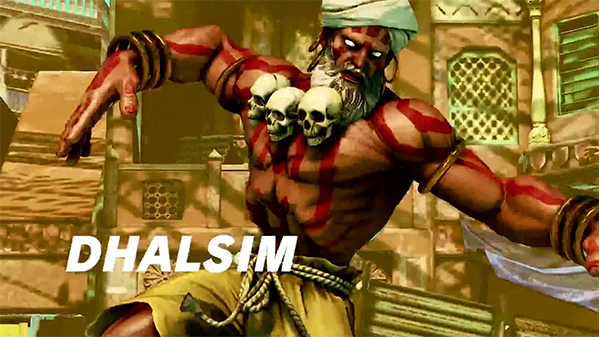

Newest Street Fighter V Character Revealed
Post: October 19, 2099 by: Rick Rollin
In case some of you missed it, Dhalsim has been announced as part of Street Fighter V's playable roster. The Indian born fighter brings his signature fire attacks with his new V-Trigger being Yoga Float which allows him to... well float.